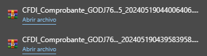

Acceder a Declaranet
Primero debemos acceder a la página de DeclaraNet correspondiente, si eres del estado de Baja California puedes acceder a DeclaraNet a través del siguiente DeclaraNet.
Después debes dar clic en el botón "Presentar Declaración".
Después debes ingresar tu CURP.
Finalmente ingresa tu contraseña.
Declaración de Inicio
Datos generales de la declaración
Damos clic en presentar declaración.

En la Fecha de inicio del encargo pondrá la fecha del primer día en el que comenzó a ejercer su profesión y en el Nivel de encargo más alto pondremos "Operativo (a) y Homólogo (a)".
Datos generales
En este apartado nos pedirán nuestros datos personales, debemos completar todos los datos y después presionar el botón verde que dice "Aceptar" y posteriormente el botón verde que dice "Guardar".
Domicilio declarante
Pasaremos el ratón por el lado izquierdo hasta llegar a la barra lateral de color negro, al pasar el ratón por encima se abrirá y nos mostrará en verde la sección que completamos, después daremos clic en "Domicilio declarante".
Se nos mostrará la siguiente ventana en donde debemos elegir nuestro domicilio, ya sea en México o en el extranjero.

En este apartado nos pedirán los datos de nuestro domicilio, debemos completar todos los datos y después presionar el botón verde que dice "Aceptar" y posteriormente el botón verde que dice "Guardar".
Datos curriculares del declarante
Pasaremos el ratón por el lado izquierdo hasta llegar a la barra lateral de color negro, al pasar el ratón por encima se abrirá y nos mostrará en verde la sección que completamos, después daremos clic en "Datos curriculares del declarante".
Se nos mostrará la siguiente pantalla en donde debemos seleccionar el botón verde.
En este apartado nos muestra nuestros datos curriculares, es decir, los datos de la institución en que estudiamos nuestra carrera u otros títulos académicos, daremos clic en "AGREGAR" al rellenar los datos y por último clic en el botón "Aceptar".
Damos clic al botón "Guardar" para completar este apartado.
Datos del empleo
Pasaremos el ratón por el lado izquierdo hasta llegar a la barra lateral de color negro, al pasar el ratón por encima se abrirá y nos mostrará en verde la sección que completamos, después daremos clic en "Datos del empleo".
En este apartado nos pedirán los datos de nuestro empleo, para ingresar nuestros datos damos clic en el botón verde.
Ingresamos todos los datos de nuestro empleo, en caso de tener más de una plaza se deben ingresar los datos de cada una de las plazas por separado.
Nota: Puedes calcular tu remuneración anual neta desde nuestra página, haciendo clic en el apartado Cómo calcular mi Remuneración anual?.

Una vez ingresada la remuneración anual neta, vamos a la parte superior derecha, en tipo de operación elegimos "Agregar" y para finalizar damos clic en el botón "Aceptar".
Para guardar los cambios, damos clic en el botón "Guardar".
Experiencia laboral
Pasaremos el ratón por el lado izquierdo hasta llegar a la barra lateral de color negro, al pasar el ratón por encima se abrirá, después daremos clic en "Experiencia laboral".
Debemos poner nuestra experiencia laboral, en caso de no tenerla pondremos la casilla que dice ninguno, si tenemos experiencia laboral daremos click en el botón verde.
Ingresaremos los datos de nuestro empleo anterior, despues vamos a la parte superior derecha, en tipo de operación elegimos "Agregar" y para finalizar damos clic en el botón "Aceptar".
Para guardar los cambios, damos clic en el botón "Guardar".
Ingresos netos
Pasaremos el ratón por el lado izquierdo hasta llegar a la barra lateral de color negro, al pasar el ratón por encima se abrirá y nos mostrará en verde la sección que completamos, después daremos clic en "Ingresos netos".
En esta sección debemos poner nuestra "Remuneración Anual neta".
Nota: Puedes calcular tu remuneración anual neta desde nuestra página, haciendo clic en el apartado Cómo calcular mi Remuneración anual?.
Al ingresar nuestra Remuneración anual, damos clic en el botón "Aceptar" y posteriormente el botón ""Guardar".
Nota: Si tienes más ingresos debes ponerlos en las secciones correspondientes.
Firmar declaración
Al guardar los datos, parecerá un botón azul en donde podremos firmar nuestra declaración.
Nos aparecerá una ventana emergente, daremos clic en "Continuar con la firma".
Daremos clic en el botón verde que dice "Firmar".
Vamos hasta la sección de abajo de las declaraciones, seleccionamos la casilla "He leído y acepto las condiciones descritas" y después hacemos clic en "Continuar con la firma".
Ahora solamente debemos descargar los archivos de nuestra declaración, imprimirlos y firmarlos.
Declaración de Modificación
Datos generales de la declaración
Damos clic en presentar declaración.
En el año pondremos el año actual en el que hacemos la declaración y en Nivel de encargo más alto pondremos "Operativo (a) y Homólogo (a)".
Datos generales
En este apartado nos pedirán nuestros datos personales, debemos completar todos los datos y después presionar el botón verde que dice "Aceptar" y posteriormente el botón verde que dice "Guardar".
Domicilio declarante
Pasaremos el ratón por el lado izquierdo hasta llegar a la barra lateral de color negro, al pasar el ratón por encima se abrirá y nos mostrará en verde la sección que completamos, después daremos clic en "Domicilio declarante".
Se nos mostrará la siguiente ventana en donde debemos elegir nuestro domicilio, ya sea en México o en el extranjero.
En este apartado nos pedirán los datos de nuestro domicilio, debemos completar todos los datos y después presionar el botón verde que dice "Aceptar" y posteriormente el botón verde que dice "Guardar".
Datos curriculares del declarante
Pasaremos el ratón por el lado izquierdo hasta llegar a la barra lateral de color negro, al pasar el ratón por encima se abrirá y nos mostrará en verde la sección que completamos, después daremos clic en "Datos curriculares del declarante".
Se nos mostrará la siguiente pantalla en donde debemos seleccionar el botón negro.
En este apartado nos muestra nuestros datos curriculares, es decir, los datos de la institución en que estudiamos nuestra carrera u otros títulos académicos. A menos que exista una modificación en este apartado, daremos clic en "SIN CAMBIO" y por último clic en el botón "Aceptar".

Damos clic al botón "Guardar" para completar este apartado.
Datos del empleo
Pasaremos el ratón por el lado izquierdo hasta llegar a la barra lateral de color negro, al pasar el ratón por encima se abrirá y nos mostrará en verde la sección que completamos, después daremos clic en "Datos del empleo".
En este apartado nos pedirán los datos de nuestro empleo, para ingresar nuestros datos damos clic en el botón negro.

Únicamente modificaremos la "Remuneración anual neta" de nuestra plaza, en caso de tener más de una plaza se debe poner la Remuneración anual neta de cada una de las plazas.
Nota: Puedes calcular tu remuneración anual neta desde nuestra página, haciendo clic en el apartado Cómo calcular mi Remuneración anual?.
Una vez ingresada la remuneración anual neta, vamos a la parte superior derecha, en tipo de operación elegimos "Agregar" y para finalizar damos clic en el botón "Aceptar".
Para guardar los cambios, damos clic en el botón "Guardar".
Ingresos netos
Pasaremos el ratón por el lado izquierdo hasta llegar a la barra lateral de color negro, al pasar el ratón por encima se abrirá y nos mostrará en verde la sección que completamos, después daremos clic en "Ingresos netos".
Nota: Al ser una declaración de modificación, el apartado "Experiencia Laboral" debería estar en verde por defecto.
En esta sección debemos poner nuestra "Remuneración Anual neta".
Nota: Puedes calcular tu remuneración anual neta desde nuestra página, haciendo clic en el apartado Cómo calcular mi Remuneración anual?.
Al ingresar nuestra Remuneración anual, damos clic en el botón "Aceptar" y posteriormente el botón ""Guardar".
Nota: Si tienes más ingresos debes ponerlos en las secciones correspondientes.
Firmar declaración
Al guardar los datos, parecerá un botón azul en donde podremos firmar nuestra declaración.
Nos aparecerá una ventana emergente, daremos clic en "Continuar con la firma".
Daremos clic en el botón verde que dice "Firmar".
Vamos hasta la sección de abajo de las declaraciones, seleccionamos la casilla "He leído y acepto las condiciones descritas" y después hacemos clic en "Continuar con la firma".
Ahora solamente debemos descargar los archivos de nuestra declaración, imprimirlos y firmarlos.
Declaración de Conclusión
Datos generales de la declaración
Damos clic en presentar declaración.
En la Fecha de conclusión del encargo pondrá la fecha del último día en el que ejerció su profesión y en el Nivel de encargo más alto pondremos "Operativo (a) y Homólogo (a)".
Datos generales
En este apartado nos pedirán nuestros datos personales, debemos completar todos los datos y después presionar el botón verde que dice "Aceptar" y posteriormente el botón verde que dice "Guardar".
Domicilio declarante
Pasaremos el ratón por el lado izquierdo hasta llegar a la barra lateral de color negro, al pasar el ratón por encima se abrirá y nos mostrará en verde la sección que completamos, después daremos clic en "Domicilio declarante".
Se nos mostrará la siguiente ventana en donde debemos elegir nuestro domicilio, ya sea en México o en el extranjero.
En este apartado nos pedirán los datos de nuestro domicilio, debemos completar todos los datos y después presionar el botón verde que dice "Aceptar" y posteriormente el botón verde que dice "Guardar".
Datos curriculares del declarante
Pasaremos el ratón por el lado izquierdo hasta llegar a la barra lateral de color negro, al pasar el ratón por encima se abrirá y nos mostrará en verde la sección que completamos, después daremos clic en "Datos curriculares del declarante".
Se nos mostrará la siguiente pantalla en donde debemos seleccionar el botón negro.
En este apartado nos muestra nuestros datos curriculares, es decir, los datos de la institución en que estudiamos nuestra carrera u otros títulos académicos. A menos que exista una modificación en este apartado, daremos clic en "SIN CAMBIO" y por último clic en el botón "Aceptar".
Damos clic al botón "Guardar" para completar este apartado.
Datos del empleo
Pasaremos el ratón por el lado izquierdo hasta llegar a la barra lateral de color negro, al pasar el ratón por encima se abrirá y nos mostrará en verde la sección que completamos, después daremos clic en "Datos del empleo".
En este apartado nos pedirán los datos de nuestro empleo, para ingresar nuestros datos damos clic en el botón negro.
Únicamente modificaremos la "Remuneración anual neta" de nuestra plaza, en caso de tener más de una plaza se debe poner la Remuneración anual neta de cada una de las plazas.
Nota: Puedes calcular tu remuneración anual neta desde nuestra página, haciendo clic en el apartado Cómo calcular mi Remuneración anual?.
Una vez ingresada la remuneración anual neta, vamos a la parte superior derecha, en tipo de operación elegimos "Agregar" y para finalizar damos clic en el botón "Aceptar".
Para guardar los cambios, damos clic en el botón "Guardar".
Ingresos netos
Pasaremos el ratón por el lado izquierdo hasta llegar a la barra lateral de color negro, al pasar el ratón por encima se abrirá y nos mostrará en verde la sección que completamos, después daremos clic en "Ingresos netos".
Nota: Al ser una declaración de conclusión, el apartado "Experiencia Laboral" debería estar en verde por defecto.
En esta sección debemos poner nuestra "Remuneración Anual neta".
Nota: Puedes calcular tu remuneración anual neta desde nuestra página, haciendo clic en el apartado Cómo calcular mi Remuneración anual?.
Al ingresar nuestra Remuneración anual, damos clic en el botón "Aceptar" y posteriormente el botón ""Guardar".
Nota: Si tienes más ingresos debes ponerlos en las secciones correspondientes.
Firmar declaración
Al guardar los datos, parecerá un botón azul en donde podremos firmar nuestra declaración.
Nos aparecerá una ventana emergente, daremos clic en "Continuar con la firma".
Daremos clic en el botón verde que dice "Firmar".
Vamos hasta la sección de abajo de las declaraciones, seleccionamos la casilla "He leído y acepto las condiciones descritas" y después hacemos clic en "Continuar con la firma".
Ahora solamente debemos descargar los archivos de nuestra declaración, imprimirlos y firmarlos.
Cómo calcular mi Remuneración anual?
Descargar tus talones de cheque
Primero debemos acceder a la página de Fone, si eres del estado de Baja California puedes acceder a Fone a través del siguiente enlace https://miportal.fone.sep.gob.mx/.
Pondremos nuestra CURP y contraseña para posteriormente darle clic al botón "Ingresar".
En la parte superior derecha está el apartado "Seleccione un perfil", le daremos clic y después seleccionamos "Trabajador".
En la parte superior izquierda está el apartado "Recibos", le daremos clic y después seleccionamos "Descargar recibos".
En el siguiente apartado notaremos que CURP y Entidad federativa ya están rellenados automáticamente, en Ciclo pondrás el año que vas a declarar y en Quincena pondrás la número 1. Finalmente, presionamos el botón rojo que dice "Buscar".
Nota: Si estás en el año 2024, vas a declarar los cheques del año anterior, es decir, los cheques del año 2023.
Aparece abajo una sección con los cheques recibos en la primera quincena, daremos clic en el botón que dice "Recibo" en cada uno de los cheques. En este caso, serían 2 cheques.
Al descargar los 2 cheques nos aparecerá en la carpeta de descargas 2 archivos comprimidos.
Buscaremos en la carpeta de descargas los archivos comprimidos, seleccionamos ambos archivos, damos clic derecho y elegimos la opción "Extraer aquí".
Nos quedarán los siguientes archivos, para calcular la Remuneración anual solo necesitaremos los archivos pdf, estos los podemos mover a otra carpeta para diferenciarlos.
Repetiremos estos pasos con cada quincena desde la 01 hasta la quincena 24.
Cuando descarguemos los cheques de las 24 quincenas y sepamos los archivos pdf en una carpeta aparte, nos debería quedar similar a la imagen.
Nota: El número de cheques puede variar dependiendo del usuario, podrían ser 43, 44 o incluso 48.
Cargar tus talones de cheque en la página
Ahora utilizaremos una herramienta de esta página para calcular la remuneración anual neta, iremos a la sección "Calculadora de remuneración" que está en la barra superior de la página o haciendo clic en el siguiente enlace Calculadora de Remuneración.
En este apartado damos clic en el rectángulo que dice "Cargar archivos".
Con el ratón vamos a seleccionar todos los talones de cheque que descargamos.
Nota: Debes subir todos los talones de cheque a la vez para que se calculen correctamente.
Remuneración Anual en Datos del empleo
En la tabla "Totales" en el apartado que dice "Remuneración anual neta sin prestaciones" nos sale la cantidad que pondremos en "Datos del empleo" en DeclaraNet.
Cuidado: Esta cantidad solo es válida en la sección "Datos del empleo".
Remuneración Anual en Ingresos netos
En la tabla "Totales" en el apartado que dice "Remuneración anual neta con prestaciones" nos sale la cantidad que pondremos en "Ingresos netos" en DeclaraNet.
Cuidado: Esta cantidad solo es válida en la sección "Ingresos netos".